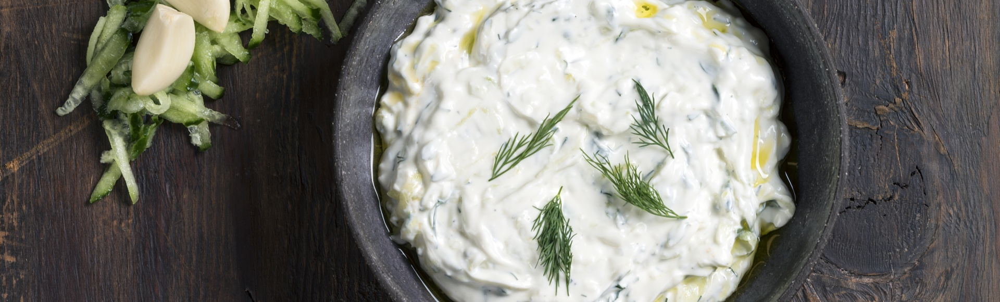

Tzatziki Recipe

Description
Μια τέλεια συνταγή για κλασικό τζατζίκι.
Ingredients
- 500 γρ. γιαούρτι
- 120 γρ. αγγούρι
- 8 γρ. σκόρδο, τριμμένο
- 120 γρ. ελαιόλαδο
- 30 γρ. ξύδι
- 4 γρ. άνηθος
Steps
- Πλένουμε το αγγούρι και το τρίβουμε στον τρίφτη με τη φλούδα του.
- Στύβουμε με τα χέρια να φύγουν τα υγρά του και το βάζουμε σε ένα μπολ.
- Προσθέτουμε το γιαούρτι, το σκόρδο, το ελαιόλαδο, το ξύδι και ανακατεύουμε.
- Προσθέτουμε τον άνηθο, το αλάτι και το πιπέρι.
Home